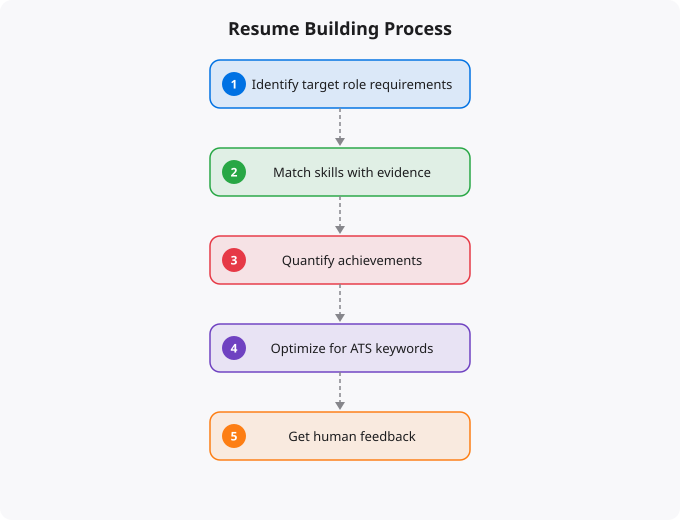

The resume has changed significantly in the AI era. Automated Applicant Tracking Systems (ATS) scan resumes before a human ever sees them. AI tools help recruiters filter and rank candidates. Competition for quality roles is global, not local. And yet the fundamental purpose of a resume remains the same: to get you an interview by demonstrating that you can do the job. Building a resume that works requires understanding both the technical requirements (passing ATS systems) and the human requirements (convincing a real person you are worth their time).
ATS stands for Applicant Tracking System — software platforms that companies use to manage job applications. When you submit your resume online, it typically goes into an ATS before any human reviews it. ATS systems parse your resume, extracting information about your experience, skills, education, and contact details. They then match that extracted information against the requirements in the job description. Resumes that score well on the match are moved forward. Those that do not may never be seen by a human at all. Your resume must be machine-readable and must include the specific language and keywords used in job descriptions for the roles you want. A beautifully designed resume in an image format or heavily formatted PDF may look impressive to a human but fail to parse correctly in an ATS.
Use a clean, simple format with standard section headings: Summary, Experience, Skills, Education, and Certifications. Avoid multi-column layouts — many ATS systems parse columns incorrectly, mixing text from different columns together. Avoid text boxes, graphics, icons, and tables in the main content areas. Use standard section headings that ATS systems recognize. Submit in the format specified by the employer. If not specified, a clean PDF or Word document are both generally ATS-compatible when formatted correctly.
The most critical factor in ATS scoring is keyword match. Read the job description carefully and identify the specific technical skills, tools, methodologies, and qualifications mentioned. Use the exact same language in your resume where it is honest and accurate to do so. If a job description asks for Kubernetes experience and your resume says container orchestration using K8s — those might refer to the same thing, but the ATS may not equate them. Use the specific terminology from the job description. Create a skills section that explicitly lists your technical skills, tools, programming languages, frameworks, platforms, and certifications. This section exists specifically to ensure keywords are present in a scannable format.
This is the most important section of your resume and the area where most people make the most significant mistakes. The fundamental error is listing responsibilities instead of achievements. Weak: Responsible for managing cloud infrastructure. Strong: Reduced cloud infrastructure costs by 35% by implementing auto-scaling policies and right-sizing EC2 instances, saving approximately Rs 65,000 per month. The difference is specificity and impact. Every bullet point in your work experience should answer: what did you do, how did you do it, and what was the result? Quantify wherever possible — percentages, amounts, time saved, users served, systems managed. Use strong action verbs to start each bullet: designed, implemented, reduced, improved, automated, built, deployed, migrated, led, optimized.
A common and critical mistake is using the same resume for every application. Have a master resume that contains all your experience, skills, and achievements in detail. For each application, create a tailored version that emphasizes the most relevant experience and skills, uses the language from the specific job description, and reorders sections if appropriate. This does not mean rewriting your entire resume for every job — it means adjusting your summary, reordering bullet points to lead with the most relevant experience, and ensuring the skills section matches the job requirements.
The professional summary at the top of your resume should immediately communicate who you are professionally, what you specialize in, and what kind of value you bring. Avoid generic summaries. Example: Cloud engineer with 3 years of experience designing and managing AWS infrastructure for fintech applications. Specialized in Kubernetes deployment, infrastructure as code with Terraform, and cloud security compliance. AWS Solutions Architect Associate and Security Specialty certified. This summary immediately tells the reader your domain, your experience level, your specific technical focus, and your certifications.
If you have limited or no professional experience, your resume needs to demonstrate capability differently. Projects matter enormously here. List every significant technical project you have built — personal projects, college projects, open source contributions — with descriptions that convey technical complexity and real skills. Include your GitHub profile prominently if you have meaningful repositories. An active GitHub showing real projects is worth more than a list of theoretical skills. Education and certifications carry more weight early in a career when work experience is limited. List relevant coursework, academic projects, hackathon participation, and technical competitions. Review your resume every six months and update it with recent achievements and new skills while the details are fresh.
← Back to BlogThe concepts covered in this article form part of a larger body of knowledge that compounds as you build on it. Real understanding comes not from reading alone, but from applying these ideas in practice — building projects, making mistakes, debugging problems, and iterating. Every concept here is a doorway to a deeper topic worth exploring further. The most effective way to move forward is to pick one idea that resonated most and go deeper: find a hands-on exercise, build something small that uses the concept, or teach it to someone else. Teaching is one of the most powerful learning techniques — explaining a concept clearly reveals exactly where your own understanding has gaps.
Technology learning is a long game. The professionals who build the most capability over time are not those who learn the fastest in any single week, but those who learn consistently over years. Building a daily habit of reading, practicing, and building — even just 30 to 60 minutes a day — compounds dramatically. The journey from beginner to professional is measured in years, not weeks, but the direction matters more than the speed. Keep moving forward.
A resume is not a list of everything you have done. It is a curated argument for why you are the right person for a specific role. Every section should be written with the reader's perspective in mind -- they are scanning, not reading, and will spend 15-30 seconds deciding whether to continue. Make it easy for them to find reasons to say yes.
HEADER:
Name (large, prominent)
Email, Phone, LinkedIn URL, GitHub URL, City
No: photo, age, date of birth, marital status
SUMMARY (3-4 lines, optional but useful for career changers):
"Backend engineer with 3 years Python experience deploying
microservices on AWS. Strong in Docker, Kubernetes, and CI/CD.
Currently seeking DevOps/Cloud engineering roles."
SKILLS (keywords for ATS):
Programming: Python, Go, SQL, Bash
Cloud: AWS (EC2, S3, RDS, Lambda), Terraform
DevOps: Docker, Kubernetes, GitHub Actions, Jenkins
Monitoring: Prometheus, Grafana, CloudWatch
EXPERIENCE (most important section):
Company, Role, Dates, Location
Bullet points using PAR: Problem-Action-Result
"Reduced deployment time from 45 minutes to 8 minutes by
implementing GitHub Actions CI/CD pipeline with Docker caching"
PROJECTS (critical if experience is limited):
Name, Technologies Used, Link to GitHub
2-3 bullet points: what it does, how you built it, results
EDUCATION:
Degree, Institution, Year
Only include GPA if above 8.0 CGPAAI can dramatically improve your resume if used correctly. The right use: paste your draft resume and a job description into Claude or ChatGPT and ask "What keywords from this job description are missing from my resume?" or "Rewrite these bullet points to emphasise quantified impact." The wrong use: ask AI to write your entire resume from scratch -- it will produce generic content that does not reflect your actual experience.
Use AI to: improve the language of bullet points you have already written, identify skills in job descriptions that you should emphasise from your background, check for ATS-unfriendly formatting, and generate multiple versions tailored to different job descriptions. The content must come from you; AI can improve how it is communicated.
Based on real hiring manager feedback: they look for impact and scale first (numbers that show the magnitude of your work), then relevant technical skills (matching the job description), then project quality (can the candidate actually build things), then growth trajectory (has the person improved over time). Red flags: vague responsibilities without outcomes, skills listed without evidence of using them, unexplained gaps, and formatting that is hard to parse quickly.
Yes, but choose carefully. Single-column text-heavy templates pass ATS best. Two-column templates look attractive but confuse many ATS parsers. Avoid: tables, text boxes, headers in the sidebar, and graphics. Google Docs templates or Overleaf LaTeX templates work reliably. Canva templates often fail ATS systems.
Emphasise projects, certifications, and education. Projects are the most valuable substitute for work experience -- build 2-3 real projects and document them well on GitHub. Contributions to open source projects are particularly impressive. List certifications (AWS SAA, CKA) prominently. Include any internship, freelance, or volunteer work that used relevant skills.
Update continuously -- add projects immediately after completing them while details are fresh, add skills as you gain them, update metrics annually. Do not wait until you are job searching to update your resume. Keeping it current means you are always ready to apply quickly when the right opportunity appears.